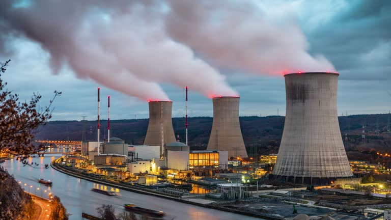

Desde 1984, a Knob Tecnologia esteve presente em projetos relevantes da área nuclear no Brasil. Antes disso, o diretor da Knob Tecnologia trabalhou no IPEN (Instituto de Pesquisas Energéticas e Nucleares), onde projetou o reator IPEN/MB-01 , Reator de Potência Zero projetado para testes do Reatos do Submarino Nuclear Brasileiro, realizando todos os cálculos de reatividade, controle e segurança.
Nossa especialidade em física de reatores nos permitiu contribuir em iniciativas de concepção de reatores nucleares, cálculos neutrônicos, sistemas de controle e segurança, além de blindagem contra radiação.
Entre os trabalhos realizados, destacamos a consultoria em instrumentação e controle para a planta LABGENE da Marinha do Brasil, em parceria com a ATECH – Grupo EMBRAER.
Essas experiências reforçam a solidez técnica da Knob e demonstram o potencial da empresa para atuar em projetos de alta complexidade no setor nuclear.
